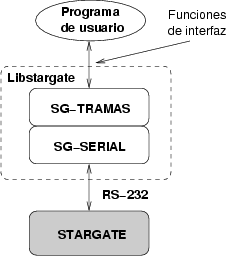
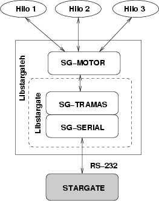

|
LIBRERIA LIBSTARGATE [PROYECTO STARGATE] |
Librería para la creación de clientes para la comunicación con los Stargates
Plataforma: MULTIPLATAFORMA (Linux y Windows/Cygwin)
Lenguaje: C
Licencia: GPL
La librería está compuesta por dos módulos. Uno de acceso al puerto serie y otro que implementa las servicios ofrecidos por los Stargates, de forma que sean accesibles desde el programa cliente.

La versión 1.0 ofrece el acceso a los servicios básicos (PING, ID) y a los servicios del servidor genérico (LOAD y STORE). Sucesivas versiones ampliarán el número de servicios implementados.
Además se ha creado una extensión a esta librería, que permite que desde diferentes hilos (threads) se pueda acceder a los servicios del Stargate. Se denomina librería libstargateh y contiene un nuevo módulo llamado sg-motor.

Esta librería se distribuye bajo licencia GPL
La última documentación se encuentra aquí: [PDF] [LYX]
|
Versión 1.0.2 |
|
Fuentes. Para Linux y Windows (Cygwin). Librería y ejempos sencillos. |
|
|
Binarios para Linux. Instalar con make install. Librería y ejemplos. |
|
|
Paquete para Debian/Etch. |
|
|
Paquete para Debian/Etch. Desarrollo |
|
|
Fuentes y ficheros necesarios para empaquetar para Debian (.orig.tar.gz, diff.gz, .dsc) |
|
Versión 1.0.1 |
|
Fuentes. Para Linux y Windows (Cygwin). Librería y ejempos sencillos. |
|
|
Binarios para Linux. Instalar con make install. Librería y ejemplos. |
|
|
Binarios para Windows. Librerías y ejemplos. |
|
|
Paquete para Debian/Sarge. Librerías. |
|
|
Paquete para Debian/Sarge. Paquete para desarrollo (ficheros .h) |
|
|
Fuentes para Debian/Sarge (sólo desarrolladores) |
|
Versión 1.0 (Obsoleta) |
|
libstargate-1.0.tgz (8KB) |
Fichero fuente con las librerias libstargate y libstargateh, así como programas de ejemplo |
|
libstargate-doc-1.0.pdf (113KB) |
Documentación en PDF |
|
libstargate-doc-1.0.tgz (10KB) |
|
|
Paquete para Debian/Sarge |
En las fuentes se incluyen ejemplos de clientes para el servidor nulo (para hacer IDENTIFICACION y PING) y para el servidor genérico:
Todos funcionan en consola, tanto para Windows como para Linux. Por defecto funcionan con el COM1 (/dev/ttyS0). Ofrecen un sencillo menú de opciones. La idea es mostrar cómo invocar los servicios desde una programa en C.
test-null: Ejemplo para servidor nulo
test-null-hilos: Idem ejemplo pero que utiliza hilos (threads)
test-generic: Ejemplos para servidor genérico
test-generic-hilos: Idem pero con hilos (threads)
Linux:
Bajar fichero con binarios: libstargate-1.x.bin.tar.gz
$ tar vzxf libstargate-1.x.bin.tar.gz
$ cd libstargate-1.x
$ make install (como root)
Para compilarla:
Bajar el paquete fuente: libstargate-1.x.tar.gz
$ tar vzxf libstargate-1.x.tar.gz
$ cd libstargate-1.x
$ make
Para instalar: make install (como root. Instala las libreriías y los ficheros .h para desarrollo)
Usuarios de debian, bajarse los paquetes .deb y teclear, como root: dpkg -i libstargate-xx.deb
WINDOWS:
Para tener las librerías y probar los ejemplos compilados:
Bajar el paquete libstargate-1.x.bin.zip
Descomprimirlo
Abrir una ventana de MS-DOS y ejecutar los ejemplos
Nota: Los ficheros .exe sólo precisan del fichero cygwin1.dll para ejecutarse, que debe estar en el propio directorio o en PATH
Para compilar:
Hay que instalar la herramienta CYGWIN. Se trata de una librería que ofrece una API POSIX, junto con herramientas de GNU para poder compilar y diversas aplicaciones opcionales portadas de Linux.
Las herramientas de desarrollo necesarias para compilar correctamente la libstargate son: (Sección devel)
binutils
gcc
gcc-mingw: Ming32 support headers and libraries for GCC
gcc-mingw-core
make
mingw-runtime
Bajar el paquete libstargate-1.x.tar.gz. Abrir una shell de cygwin y ejecutar:
$ tar vzxf libstargate-1.x.tar.gz
$ cd libstargate-1.x
$ /bin/make
Esto generará las librerías y los fichero .exe de ejemplo, dentro del directorio src.
Los ficheros .exe se pueden ejecutar desde la shell de Cygwin o desde una consola MS-DOS. En este último caso el fichero cygwin1.dll debe estar en el PATH.
Proyecto Stargate: Página principal del proyecto
servicios básicos: PING, ID
servidor genérico: LOAD y STORE
Cygwin: API de Linux para Windows. Permite hacer software en Linux que funcione en máquinas Windows.
09/Jul/2006: Nueva versión 1.0.2 con los siguientes cambios:
Funcionamiento con conversores USB-serie
Modificados los ejemplos para que se pueda especificar el dipositivo serie (y poder así probarlo con conversores USB-serie)
Ahora la librería se puede usar también desde clientes escritos en C++ (Gracias a Fernando Herrero Carrón)
13/Jul/2004: Nueva versión 1.0.1, con los siguientes cambios:
Versión Multiplataforma, que funciona en Linux y Windows (CYGWIN)
Las fuentes son únicas, tanto para Linux como para Windows (fichero libstargate_1.0.1-1.tar.gz)
Corregido BUG: Los arrays de almacenamiento de las tramas estaban mal dimensionados y causaban una “violación de segmento” de vez en cuando.
Creados paquetes para Debian/Sarge: libstargate_1.0.1-1_i386.deb y libstargate-dev_1.0.1-1_i386.deb
Disponible tamién el paquete con las fuentes de los paquetes para debian: libstargate_1.0.1-1.src.tar.gz
29/Oct/2003: Creado paquete Debian, libstargate_1.0-1_i386.deb
21/Oct/2003: Publicada versión 1.0 de la libstargate, con la siguiente funcionalidad:
libstargate implementa los servicios PING, ID, LOAD y STORE
Extensión para hilos: libstargateh, que implementa los servicios PING, ID
Programa ejemplo sgc-null-test, para libstargate
Programa ejemplo sgc-null-test-hilos, para libstargateh